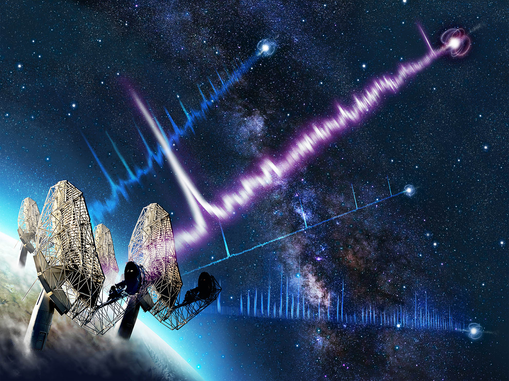

October 10, 2026
A flash of radio waves just crossed 10 billion years of space to reach us
FRB 20240304B is the most distant fast radio burst ever detected — emitted when the universe was only 3 billion years old, and a new probe of the matter between galaxies.
READ THE STORY →
October 10, 2026
The Beale Ciphers: Two Centuries, Three Number Strings, Zero Answers
An 1885 pamphlet printed three strings of numbers and a story of buried treasure worth tens of millions. One cipher was cracked with the Declaration of Independence as the key. The other two have beaten every codebreaker for two centuries — and the story itself may be a hoax.
READ THE STORY →
October 09, 2026
Panama's M7.7: The Third-Strongest Earthquake of 2026
A magnitude 7.7 earthquake struck Panama on Friday afternoon — buildings collapsed, a tsunami warning was issued and later lifted, and a M6.6 aftershock followed. Here is what the instruments say.
READ THE STORY →
October 09, 2026
The Orionids Are Already Falling — Here's How to Catch Halley's Comet's Leftovers
The Orionid meteor shower is active now, peaking the night of October 21–22. Every streak is a piece of Halley's Comet — but a bright Moon means the real show runs in the pre-dawn hours.
READ THE STORY →
October 09, 2026
Weekly Earthquake Watch: A 6.3 off Vanuatu Caps Seven Busy Days
The week's largest quake — a magnitude 6.3 off Vanuatu — barely registered with humans. The rest of the planet's shaking stayed remote too. Here's the seismic log, plus the one cheap piece of gear seismologists keep recommending.
READ THE STORY →
October 08, 2026
Mars's Oddest Cloud Just Got Odder — It May Run on Physics We've Never Seen
The Arsia Mons Elongated Cloud grows up to 1,800 km long every Martian morning — and new modelling says it can only form through homogeneous ice nucleation, a cloud-formation process never before observed in any planetary atmosphere.
READ THE STORY →
October 07, 2026
The 2026 Nobel Prize in Chemistry Solved the Mystery of Life's Mirror Images
Henri B. Kagan and Kenso Soai won for cracking homochirality — the century-old puzzle of why life uses only one mirror image of its molecules. One laureate got the call while out shopping.
READ THE STORY →
October 06, 2026
The Beale Ciphers — a $60 Million Treasure Hunt Written in Numbers
An 1885 pamphlet claims a man named Thomas J. Beale buried a fortune in Virginia and encoded its location in three strings of numbers. Only one was ever decoded — and the treasure has never been found.
READ THE STORY →
October 06, 2026
8:30 AM on Mars — Curiosity's Stunning Dawn Panorama
A six-shot Mastcam panorama taken at 8:30 a.m. local time shows wind-carved yardangs on the horizon — and a rover that just climbed higher than any machine in history.
READ THE STORY →
October 06, 2026
The Milky Way's First Microblazar — a Black Hole Pointing at Earth
Astronomers have identified the galaxy's first confirmed miniature quasar — a stellar-mass black hole whose jet points almost directly at us. Its other jet may be forging some of the Milky Way's fastest particles.
READ THE STORY →
October 06, 2026
The 2026 Nobel Prize in Physics Goes to a Cubic Kilometer of Antarctic Ice
Francis Halzen won physics' highest honor for dreaming up — and building — the IceCube Neutrino Observatory, the South Pole detector that opened an entirely new way of seeing the universe.
READ THE STORY →
October 06, 2026
Sugar in Space: The First Sugar Ever Detected Between the Stars
Erythrulose — a real sugar — has been found drifting in a molecular cloud 26,700 light-years away. The universe was making the ingredients of life before our Sun was born.
READ THE STORY →
October 05, 2026
A Star Is Slowly Snacking on a Brown Dwarf — and It's Never Been Seen Before
For the first time, astronomers have caught a small star steadily feeding on a closely orbiting brown dwarf — a slow, gentle cannibalism that could last billions of years.
READ THE STORY →
October 05, 2026
The "phoenix planet": first evidence of a world born after its star died
Astronomers found chemical fingerprints suggesting a new planet formed from the wreckage of a dead star — the first evidence that planetary systems can have a second beginning.
READ THE STORY →
October 05, 2026
The "Wow!" Signal Just Got Bigger — And More Mysterious
A 2025 reanalysis of the 1977 Wow! signal — the most famous unexplained radio burst in history — found it was at least four times stronger than long believed. The leading natural explanation has never actually been observed.
READ THE STORY →
October 05, 2026
The Ghost Molecule: Webb Catches Chemistry's Most Elusive Building Block Around a Dying Star
For the first time, the James Webb Space Telescope has directly detected the methyl radical — one of chemistry's most reactive molecules — around a dying star in the Large Magellanic Cloud. And there's far more of it than anyone expected.
READ THE STORY →
October 04, 2026
The Week's Biggest Quake Almost Nobody Felt
A magnitude 5.9 off Indonesia was the week's largest — but the most-felt quake was a modest 4.2 in Washington state, reported by more than 9,500 people.
READ THE STORY →
October 04, 2026
The Flash Was Only the Beginning: A Hidden X-ray Phase After a Neutron-Star Merger
A gamma-ray flash lasted less than a second. Then Einstein Probe caught something nobody expected: nearly ten minutes of soft X-ray afterglow from a colliding pair of neutron stars.
READ THE STORY →
October 04, 2026
He Was Looking for a Campsite. He Found a 390-Million-Year-Old Impact Crater.
An amateur astronomer spotted a strange circle on satellite maps while planning a camping trip. It turned out to be a 25-kilometer scar from an ancient asteroid strike — the largest impact crater discovered in nearly a decade.
READ THE STORY →
October 03, 2026
The Lab That Never Sleeps: Inside Our 20-Minute Anomaly Watch
Every 20 minutes, our lab queries three live public feeds and writes an anomaly digest. Here's the experiment — the process, the plumbing, and what it's not.
READ THE STORY →
October 03, 2026
Kryptos K4: The Answer Was Found — But Nobody Cracked the Code
For 35 years the CIA courtyard cipher held out. Then two journalists found the plaintext in a Smithsonian archive, an auction paid $962,500, and the cipher method is still a mystery.
READ THE STORY →
October 02, 2026
Weekly Earthquake Watch: The Planet Had a Busy Week
A magnitude 6.6 near New Caledonia led the week's seismic log — roughly 929 quakes of M1.5+ in seven days, straight from the public USGS-tracked feeds. A roundup, not a forecast.
READ THE STORY →
October 02, 2026
First Confirmed Radio Signal Localized to an Exoplanet — Beta Pictoris b
For the first time, astronomers have caught a radio signal coming from a planet outside our solar system — and this time they know it's the planet, not the star.
READ THE STORY →